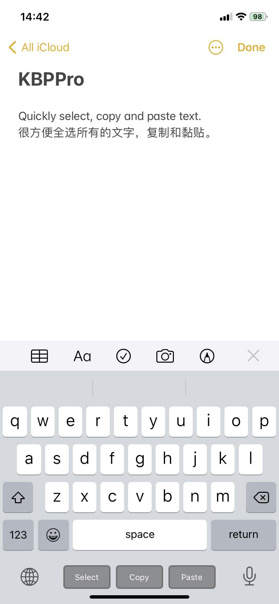
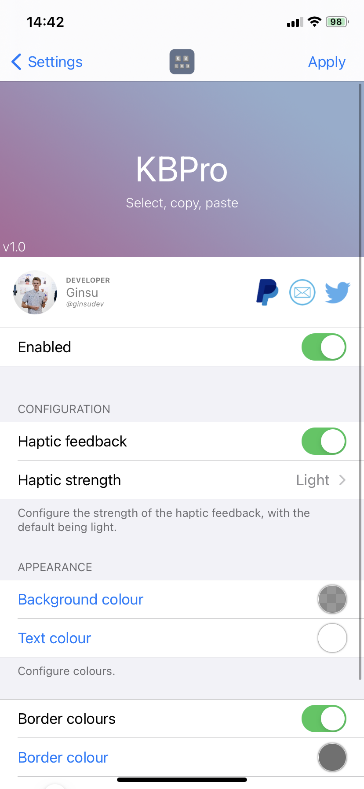

-
KBPro gives users the ability to quickly select all text, copy and paste with the click of a button under the keyboard in a compact design.
Only works on notched devices and tested on iOS 14.3. 不支持有主页键的设备。
 
In this version
-
1.0.0
- Initial release.
Previous updates
-
1.0.0
- Initial release.
Known Issues
- No current issues.